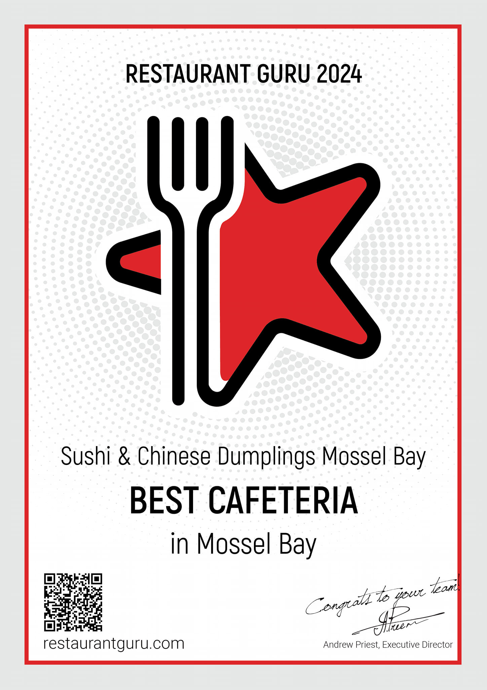

We are a resturant what only service top notch shushi to our customers.WE only dont just server shushi
We only server highly food to our customers A flavourful sushi delightful to the palate. We only don’t just serve Shushi but also variety of other foods what you can find out more at the MENU section in our CHINESE MENU option. We have also received a certificate for the BEST CAFETERIA in Mossel Bay.
